Part 3 · Spatial pattern · Chapter 5
SDO
Second-dimension outliers
The question
Do local anomalies of the covariates around a sample help to predict my variable, and by how much?You need
Two layers in the same projected coordinate system: samples with a numeric response y, and a grid of cells with the covariates as fields.You get
Positive and negative outlier strengths of each covariate at several radii, the stable ones among them, maps of them, prediction maps with and without them, and a cross-validation of their gain.1The method
The idea
Local anomalies around a location can explain what happens there. SDO (Ren, Song and Yu 2026) measures, around every sample and at several radii, how far the grid cells of a covariate stand out from their neighbourhood:
z = (value − neighbourhood mean) / neighbourhood SD
The neighbourhood is the grid cells closer than the radius b to the sample. The positive strength is the sum of z over the cells with z above +s; the negative strength is the sum of z over the cells with z below −s. s is the outlier threshold, 2 standard deviations in the published model.
So each covariate gives two variables per radius, named like V1_p_b20 (positive, 20) and V1_n_b20 (negative, 20). A positive strength is 0 or above, a negative one 0 or below; 0 means that the neighbourhood holds no outlier of that sign. The example has 6 covariates × 10 radii × 2 signs = 120 variables.
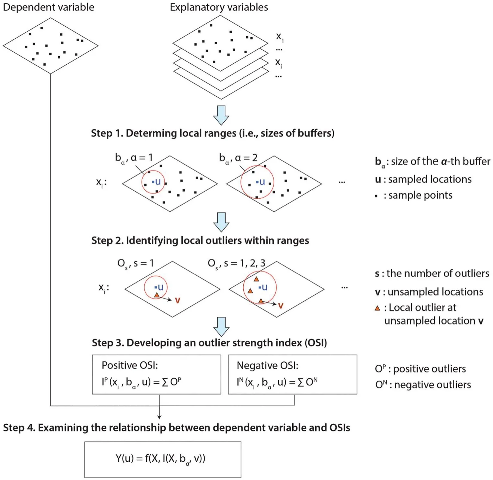
The three parts
| Part | Question | Result |
|---|---|---|
| Scales | How strong are the outliers of each covariate around every sample? | Two variables per covariate and radius, and a catalogue that says what each one measures |
| Variable selection | Which of them are ranked highly in a stable way? | At most one positive and one negative variable per covariate, chosen with the selection of GCF: random forests on resampled spatial blocks |
| Prediction and cross-validation | What do they change on the map, and do they predict better? | Maps of the selected variables; maps from a random forest with the raw covariates (the baseline, X) and with the selected variables added (X + SDO); R² of both in spatial and random folds |
When to use it
- You predict a variable at samples from gridded covariates and expect local extremes around a sample to matter, and not only the local level.
- You want to see where those outliers are: the outlier maps draw every selected variable over the grid.
- You want an honest answer to "do the new variables help?": the baseline is always shown beside them.
Where it has been used
| Field | Response y | Spatial unit | Study |
|---|---|---|---|
| Crop production | Annual wheat production | Local government area | Ren, Song and Yu (2026) |
| Crop production | Barley production per km² | SA2 polygon | Ren et al. (2026), where the outlier patterns explain spatial heterogeneity |
Both studies use covariates of climate, terrain and land cover. The data that fit are the same as for SDA: a response at locations and a dense grid of covariates around them.
Keep in mindA selected variable is stable, and stability is not evidence of prediction. Whether the variables help is the cross-validation's question. In the example the answer is "it cannot be told from noise", and the chapter shows it as it is. R² is always 1 − SSE/SST.
2In Heterra
2.1 Prepare your data
Two layers in the same projected coordinate system (Part 1 shows how to add data). The samples have one row per observation. The grid has cells around the samples, with the covariates as fields.
| Layer or field | Type | In the example |
|---|---|---|
| Samples | Points, polygons or, since version 1.6.0, a table | 300 simulated samples |
| Response y | Number, in the samples | response |
| Grid | Grid cells, points or polygons | 3,661 cells, 10 km apart |
| Covariates | Numbers, fields of the grid | V1 to V6 |
| Boundary (optional) | A polygon layer | sdo_boundary: the outline on the maps in the charts, which show only the cells inside it. It changes no result. |
The covariates may also be fields of the samples, under the same names. A sample without a covariate's field gets the value of the nearest grid cell that has one, and the catalogue says so. The example is simulated: it follows the process of the method's public demo data, in an irregular study area, with known outlier structure. Its coordinates are in km and it has no coordinate system. Its numbers illustrate the tool and do not describe a real study.
2.2 Run the example, step by step
Open the tool from the Toolbox (Spatial pattern → SDO), click Tutorial, then Load Example. The samples, the grid and the boundary appear on the map, and the panel on the right is filled in for you.
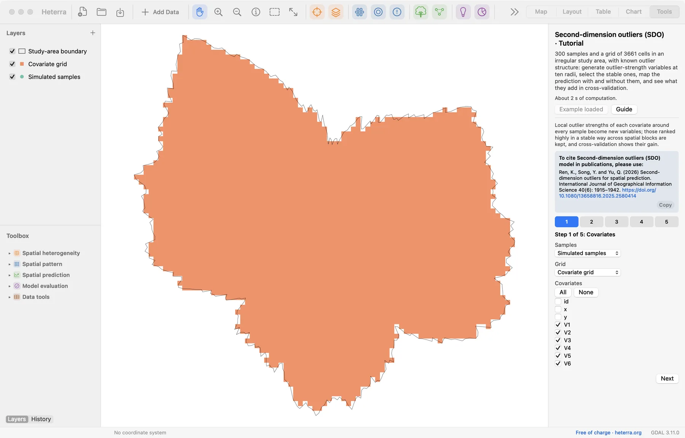
The panel has five steps, and three of them compute: steps 2, 4 and 5 each have a Run button, and each run needs the one before it. A tick on a step's number says that it has been run. The pictures show the panel after the runs.
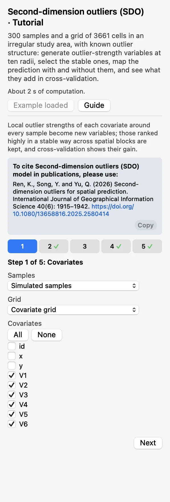
CovariatesChoose the Samples, the Grid and the covariatesV1toV6. Click Next.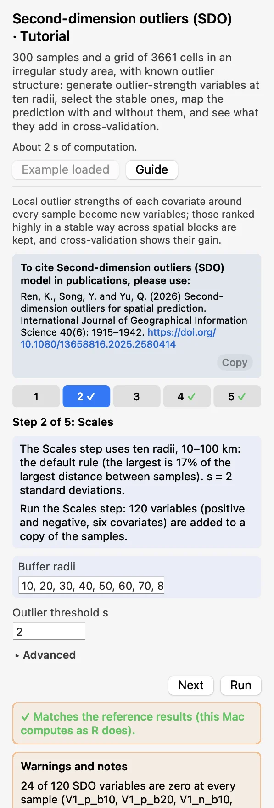
ScalesKeep the buffers 10, 20, …, 100 km and s = 2. Click Run: a copy of the samples gets 120 new fields.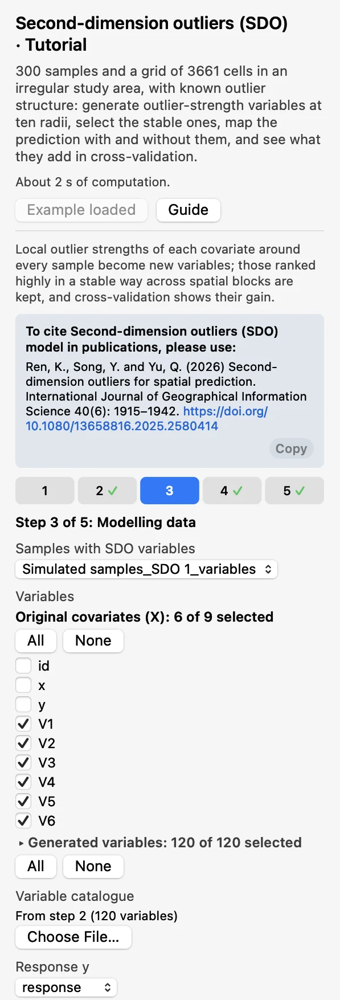
Modelling dataThat copy, the catalogue of step 2 and y =response.V1toV6are the Original covariates (X); all 120 are ticked under Generated variables.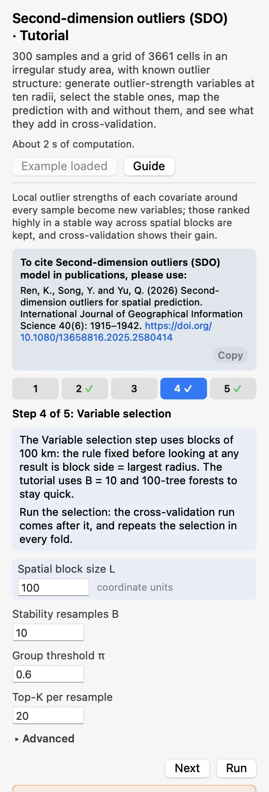
Variable selectionBlock size 100, B = 10 resamples. Click Run; it cannot be skipped, because step 5 runs after it.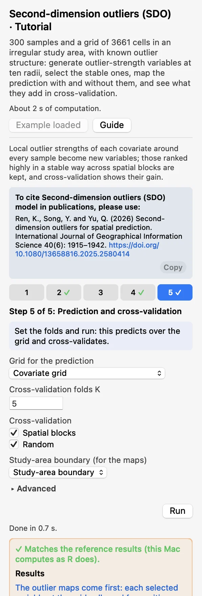
Prediction and cross-validation5 folds, Spatial blocks and Random. Click Run (a few seconds).
After step 2 a warning says that 24 of the 120 variables are zero at every sample: the radii 10 and 20 km hold few cells of this 10 km grid. That is expected here. The tutorial uses B = 10 resamples, 100-tree selection forests and 200-tree random forests to stay quick; the defaults are B = 80, 200 and 500 trees. After the selection the Chart page shows the selected variables, and after the last run the outlier maps. A green line says that the results match the reference results computed with R.
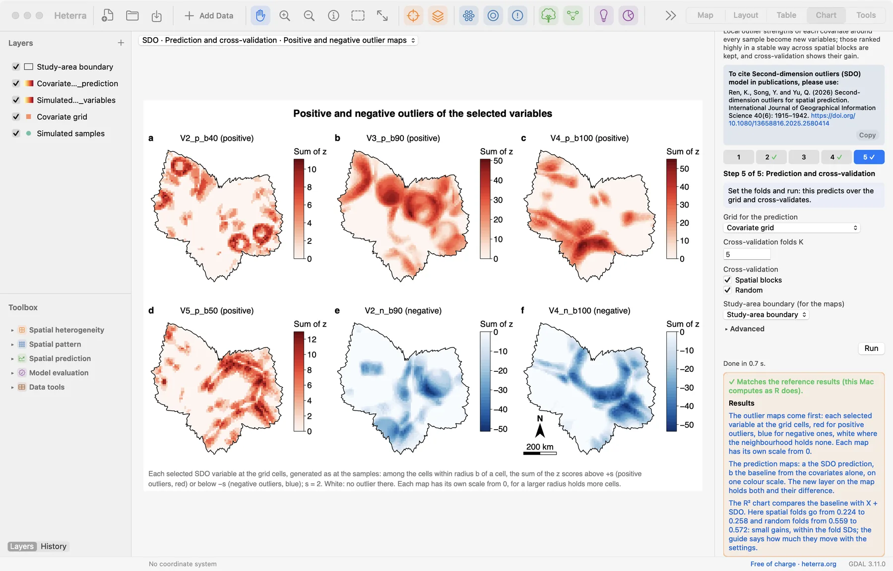
How the block size was chosen. The rule was fixed before looking at the tutorial's results: block side = the largest buffer radius (100 km, 21 blocks). On this data set the spatial result depends strongly on the block size, so the size must not be chosen from the result.
2.3 With your own data
- Add the samples and the grid (Add Data), open SDO from the Toolbox and choose them in step 1. Both must have the same coordinate system; otherwise the run stops. A layer in longitude and latitude is projected to the Projected CRS for computing that you choose, which then appears in step 1.
- The buffers are in the unit of the coordinates. The default follows the rule of Ren et al.: 5 to 10 radii, the largest 10 to 20% of the largest distance between samples (here 100 km, 17% of 590 km).
- Fix the block size by a rule before you run, for example the largest buffer radius, and keep it.
- Keep the defaults for real analyses: B = 80, 200 selection trees, 500 random-forest trees.
- The response is not offered among the variables, and a variable generated from it is refused: a model given y to predict y says nothing.
- With fewer than Minimum cells (default 10) in a neighbourhood, or an SD of 0, both strengths are 0. A grid cell with a missing value is skipped.
- If a variable is zero at every sample you get a warning: check the unit and that the layers overlap; otherwise the radius holds too few cells or s is too strict.
- The grid needs every covariate as a field. A cell with a missing value of a model variable is not predicted.
- For a table without geometry, two fields appear below the layer and must be chosen: X coordinate (projected) and Y coordinate (projected). The values are used as they are, so they must be in the coordinates and the unit of the grid. A step that takes the table made by an earlier step asks for the two fields again.
- When the grid is a polygon layer, the maps in the charts draw its polygons, coloured by value.
- Without a coordinate system, set Map units (under Advanced in step 5) so that the maps get a north arrow and a scale bar, as the tutorial does with Kilometres. It changes only the charts.
- Column names, category values and file names are best written with English letters, digits and underscores.
3Reading the results
Read the results in this order: the selected variables (what was kept, and at which radius?), the outlier maps (where are those outliers?), the prediction maps (what do they change?), then the cross-validation and the folds table (is the change an improvement?), and last the scatter of observed against predicted values.
3.1 Selected variables
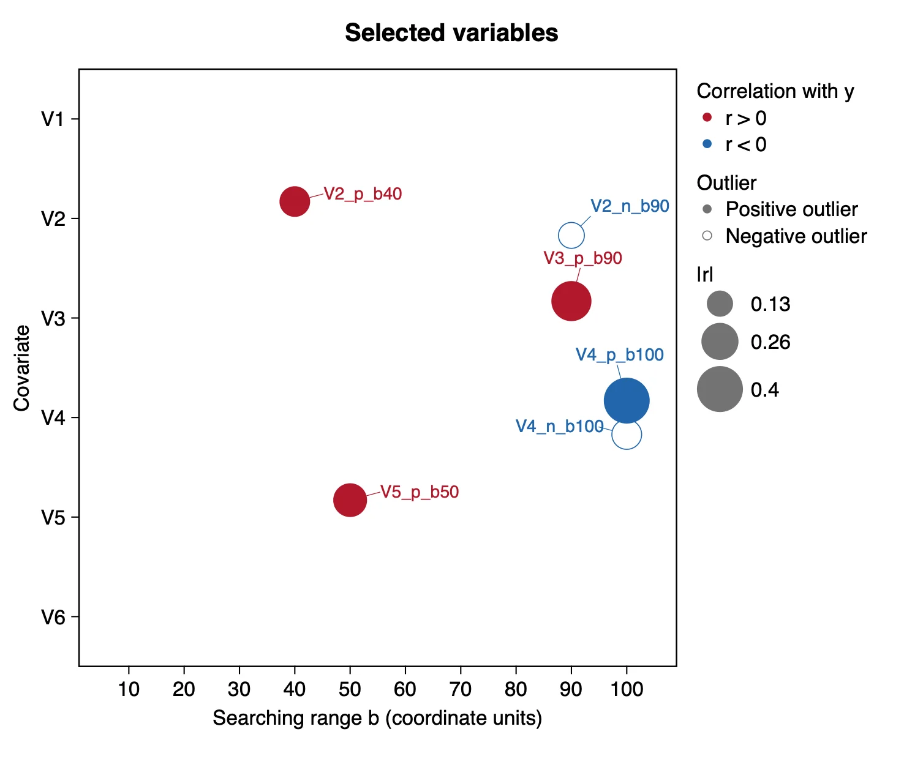
What it shows. The variables the selection kept. The area of a bubble is |r|, where r is the correlation between the variable and y over the samples. There are two legends, and they are independent: the colour says only the sign of r; solid or hollow says only a positive or a negative outlier variable. The six raw covariates are always kept and are not drawn.
| Variable | Covariate | Outlier | b (km) | r | Frequency |
|---|---|---|---|---|---|
| V4_p_b100 | V4 | positive | 100 | −0.40 | 0.8 |
| V3_p_b90 | V3 | positive | 90 | 0.30 | 0.8 |
| V5_p_b50 | V5 | positive | 50 | 0.22 | 0.8 |
| V2_p_b40 | V2 | positive | 40 | 0.18 | 0.6 |
| V4_n_b100 | V4 | negative | 100 | −0.17 | 0.9 |
| V2_n_b90 | V2 | negative | 90 | −0.13 | 0.8 |
How to read it. A covariate's positive variables are one group and its negative ones another, and each group that passes keeps one variable. Six of the twelve groups passed here; V1 and V6 have none. A positive outlier variable can have r < 0: V4_p_b100 has the largest |r| and it is negative, so y is lower where the surroundings hold strong high outliers of V4. The frequency (table Selected variables) is the share of the resamples in which the variable was among the 20 most important generated variables. Neighbouring radii score almost alike (V3_p_b100 also has 0.8), so read a radius as "about 90 to 100" and not as an exact scale.
"Positive and negative outlier strengths (threshold s = 2) of six covariates were computed within 10 to 100 km of each sample (Ren et al. 2026), 120 variables in total. The stability selection kept six, four positive and two negative, from V2, V3, V4 and V5 (Table X); the strongest correlation with the response was that of the positive outliers of V4 within 100 km (r = −0.40)."
3.2 Outlier maps
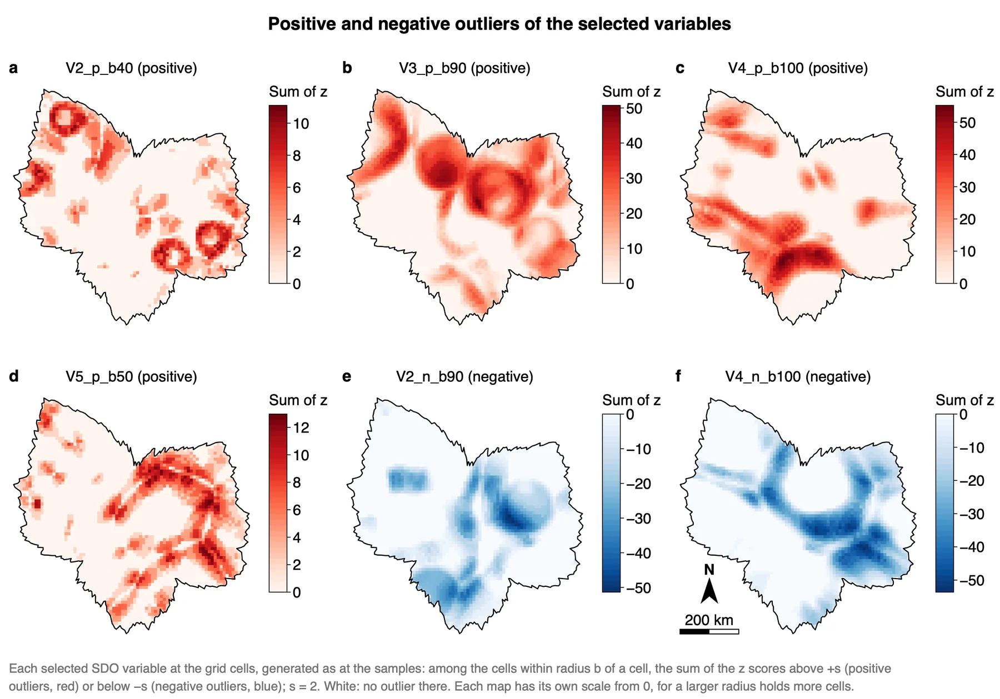
What it shows. Each selected variable at the grid cells, as the prediction reads it: among the cells within radius b of a cell, the sum of z above +s (red maps) or below −s (blue maps). White means no outlier in that neighbourhood.
How to read it. A coloured cell is not itself an outlier: it has outliers within b around it. That is why a small, isolated anomaly appears as a ring or a disc of radius b (the rings in map a, V2_p_b40) and a line of anomalies as a band. Each map has its own colour scale from 0, because a larger radius holds more cells and so larger sums: map a reaches about 11 and map c about 55. Compare places within a map, not the colours of two maps.
"Figure X maps the six selected outlier variables. Positive outliers of V4 within 100 km concentrate in a band from the west to the south of the study area. Each panel has its own scale, because the sums grow with the radius."
3.3 Prediction maps
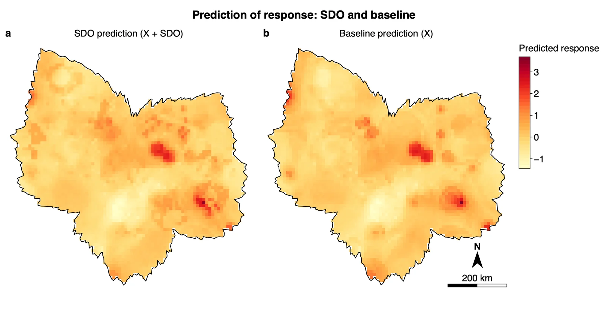
What it shows. Two random forests fitted on all samples and applied to every grid cell. The selected variables are generated at the cells as they were at the samples; a cell lies at distance 0 from itself, so it is in its own neighbourhoods, and near the grid's edge a neighbourhood holds fewer cells. A new layer on the map holds pred_base, pred_sdo and pred_diff.
How to read it. The two maps are much alike: the same two high spots east of the centre and in the south-east, the same low area south of the centre. Map a adds local detail around them. The maps show what the variables change, not that the change is right: that is the R² chart's question.
"The predictions with and without the outlier variables show the same main pattern (Figure X); the differences are local."
3.4 Cross-validated R²
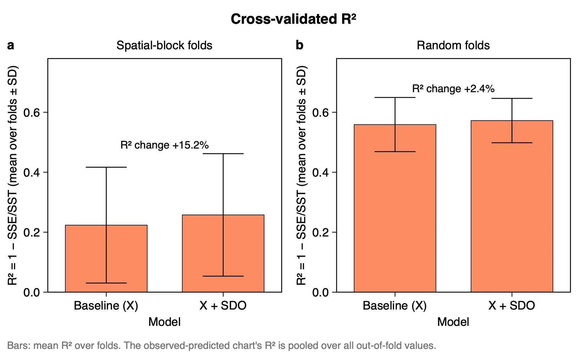
What it shows. For each kind of fold, the baseline against X + SDO: mean R² over the folds (R² = 1 − SSE/SST) ± SD, with the change written above the bars as a percentage of the baseline. The selection is repeated in every fold.
| Folds | R² baseline (SD) | R² X + SDO (SD) | RMSE baseline | RMSE X + SDO |
|---|---|---|---|---|
| Spatial blocks | 0.224 (0.193) | 0.258 (0.204) | 0.635 | 0.611 |
| Random | 0.559 (0.090) | 0.572 (0.074) | 0.546 | 0.540 |
How to read it. These gains are small, and shown as they are. They lie well inside the fold SDs (0.19 to 0.20 for spatial folds), and the table Cross-validation by fold shows that X + SDO is better in only 3 of 5 spatial folds:
| Spatial fold | Test samples | R² baseline | R² X + SDO |
|---|---|---|---|
| 1 | 84 | 0.353 | 0.413 |
| 2 | 62 | 0.221 | 0.216 |
| 3 | 64 | 0.460 | 0.490 |
| 4 | 51 | −0.031 | 0.201 |
| 5 | 39 | 0.115 | −0.032 |
The result also moves with the settings. The tutorial guide lists these runs:
| Setting | Spatial folds | Random folds |
|---|---|---|
| Tutorial (100 km blocks, B = 10) | 0.224 → 0.258 | 0.559 → 0.572 |
| Defaults (B = 80, 200 and 500 trees) | 0.229 → 0.265 | 0.565 → 0.570 |
| 50 km blocks | 0.406 → 0.456 | – |
| 150 km blocks | 0.090 → 0.224 | – |
| Tutorial's radii, B = 20 | 0.224 → 0.272 | 0.559 → 0.568 |
| Public code's radii (20, 40, …, 200 km), B = 20 | 0.224 → 0.255 | 0.559 → 0.581 |
What this meansThe block size moves the baseline much more than the gain, which is why it must not be chosen from the result. With the defaults X + SDO is again better in 3 of 5 spatial folds. So on these simulated data, SDO's spatial gain cannot be told from noise.
"In five-fold cross-validation with 100 km spatial blocks (the largest buffer radius, fixed in advance), adding the outlier variables changed the mean R² from 0.224 (SD 0.193) to 0.258 (SD 0.204), and in random folds from 0.559 (SD 0.090) to 0.572 (SD 0.074). The model with the variables was better in three of five spatial folds; the gain lies within the variation between folds."
3.5 Observed vs predicted
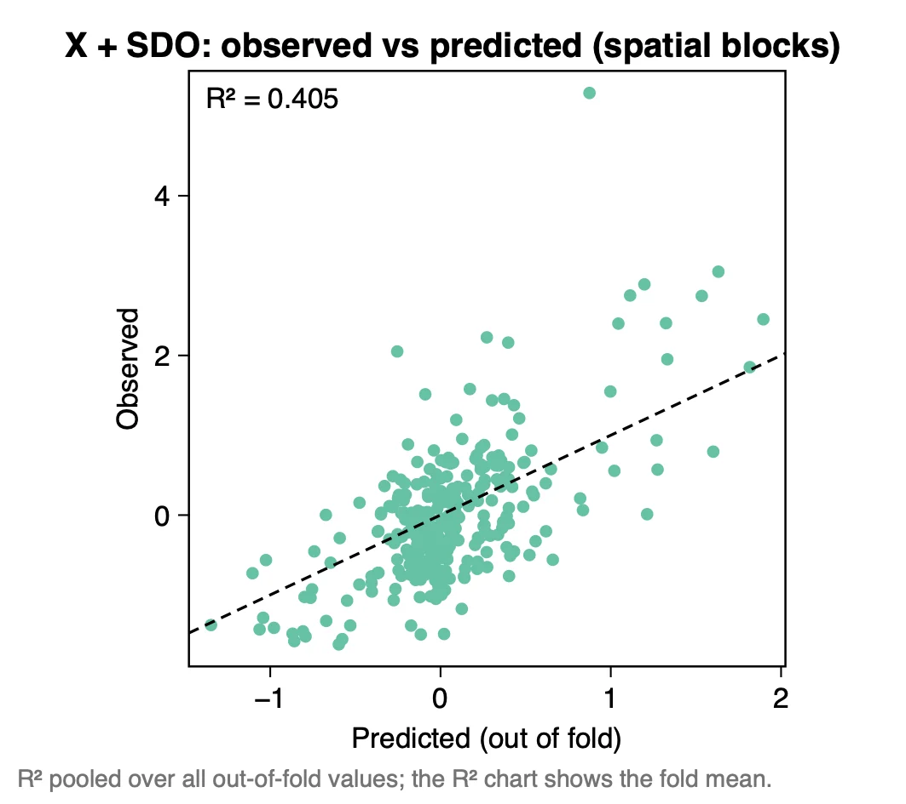
What it shows. One point per sample: its observed y against the prediction made when its fold was left out. The printed R² (0.405) is pooled over all out-of-fold values.
How to read it. The pooled R² (0.405; baseline 0.340) is not the mean over folds (0.258): the pooled value is computed once over all 300 predictions, the fold mean gives each fold the same weight. Say which one you report. Most samples lie in a cloud near 0, and the high observed values are under-predicted: the largest observation, about 5.3, is predicted below 1.
Export any figure from the Chart page as PDF, SVG or PNG; Data CSV saves the numbers behind it. Export results in the panel writes a report of the run (Part 1).
3.6 Reading the results together
The outputs make one argument in four steps: outliers of the covariates around the samples hold information (which covariate, which sign, at which radius), the outlier maps show where they lie, the prediction maps show what they change, and the cross-validation says whether the change is an improvement. Read them in this order:
- Selected variables: which covariates, signs and radii were kept, and the sign of r.
- Outlier maps: where the selected outliers lie in the study area.
- Prediction maps: what the selected variables change, and where.
- Cross-validated R², with the table Cross-validation by fold: the gap between X + SDO and the baseline, and whether it holds in most folds.
- Observed vs predicted: which part of the range of y is predicted well.
What SDO is notIt does not look for outliers of the response, and it does not interpolate the response: the values of y at neighbouring samples are never used. It uses the same neighbourhoods as SDA, and summarises the outliers of the covariates in them where SDA takes quantiles. The outlier maps are not maps of outlier cells: a coloured cell has outliers within b around it.
3.7 From the results to a manuscript
| Section | What to write | From Heterra |
|---|---|---|
| Methods | The definition of z and of the positive and negative strengths; the threshold s and the radii, with the rule that gave them; the selection rule and its settings; the folds, and the block size with the rule that fixed it | The settings of the run (in the exported report) |
| Results | Follow the order of the run: which outlier variables were selected, where they lie, what they change on the map, X + SDO against the baseline on left-out samples. Every finding has a number | Figures Selected variables, Positive and negative outlier maps, Prediction maps, Cross-validated R² and Observed vs predicted; tables Selected variables and Cross-validation by fold |
| Discussion | Which covariates' outliers matter, of which sign and within about which radius; the size of the gain beside the variation between folds; how the result moves with the block size | Table Selected variables (the frequencies of the neighbouring radii); table Cross-validation by fold; further runs with other block sizes, given as a sensitivity check |
- Check how many grid cells lie inside the smallest radius. With too few cells the strengths are 0 at every sample.
- Do not choose the block size, the radii or s from the cross-validation result. Fix them by a rule before the run.
- Neighbouring radii describe almost the same neighbourhood, so their variables are much alike. Do not read one selected radius as an exact scale.
4Exercises
Exercises 1 to 3 use the example. Exercise 4 is for your own data.
Exercise 1Read
Run the example with its settings. How many SDO variables are selected, and for which covariates is none selected? Which selected variable has the largest |r|, and what do its colour and its fill tell you?
Answer
Six, and none for V1 and V6. V4_p_b100 has the largest |r| (r = −0.40). It is blue because r is negative, and solid because it is a positive outlier variable: the two legends are independent.
Exercise 2Explore
Open the table Cross-validation by fold from the Outputs. In which spatial folds is X + SDO worse than the baseline? Which single fold contributes most of the gain in the mean? In how many random folds is X + SDO better?
Answer
Worse in folds 2 (0.216 against 0.221) and 5 (−0.032 against 0.115). Fold 4 rises from −0.031 to 0.201, far more than any other fold, so the mean gain of 0.034 rests largely on one fold of 51 samples. In the random folds X + SDO is better in three of five (folds 2, 3 and 4).
Exercise 3Interpret
A colleague tries blocks of 50, 100 and 150 km and writes: "With 150 km blocks SDO more than doubles the spatial R² (0.090 → 0.224), so we report that setting." What is wrong with this?
Answer
The block size was chosen from the result. The three sizes give baselines of 0.406, 0.224 and 0.090: the block size moves the baseline much more than the gain, and the large percentage comes from the small baseline. Fix the size by a rule before running (here: the largest buffer radius, 100 km), report that run with its fold SDs, and give the other sizes as a sensitivity check.
Exercise 4Your data
Run SDO on your own samples and grid with the default settings (B = 80, 200 and 500 trees). Write three sentences for a results section: one on the variables selected (covariate, sign of the outlier, radius, sign of r), one on where the strongest of them lies on its outlier map, and one on the cross-validated R² of the baseline and of X + SDO in spatial folds.
Checklist
Are the samples and the grid in the same projected coordinate system, and the radii in its unit? Did any variable come out zero at every sample, and do you know why? Did you fix the block size before looking at the result? Did you give the SD over folds beside each mean R² and the number of folds in which X + SDO was better? Did you compare places within an outlier map, not colours between maps?
References
- Ren, K., Song, Y. & Yu, Q. (2026). Second-dimension outliers for spatial prediction. International Journal of Geographical Information Science 40(6): 1915–1942. doi:10.1080/13658816.2025.2580414
- Ren, K., Song, Y., Yang, X., Wang, X., Chen, M. & Yu, Q. (2026). Spatial outliers as a pattern determinant for explaining heterogeneity. International Journal of Geographical Information Science: 1–23. doi:10.1080/13658816.2026.2682957 (the public code and demo data)
- Song, Y. (2022). The second dimension of spatial association. International Journal of Applied Earth Observation and Geoinformation 111: 102834. doi:10.1016/j.jag.2022.102834
- Song, Y. (2026). Generalized covariate field (GCF). International Journal of Geographical Information Science 40: 1–29. doi:10.1080/13658816.2026.2729719 (the selection and the cross-validation)
- R package gcf: cran.r-project.org/package=gcf. Heterra's results match gcf 0.1.1, ranger 0.18.0 and randomForest 4.7-1.2.
Heterra guide, for version 1.6.0. © 2026 Yongze Song. Documentation and tutorial data: CC BY 4.0.